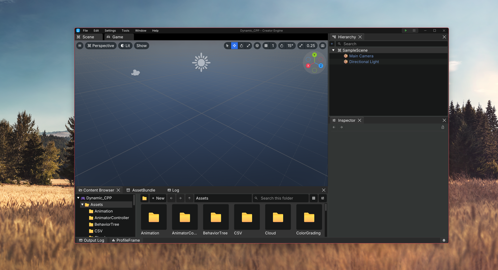

01 RENDERING
하나의 렌더 경계.
DX12와 Vulkan을 RHI로 분리하고, RenderGraph가 패스 검증·배리어·컬링·자원 수명을 관리합니다.
RenderGraph 구조 ↗상상한 세계를, 직접 만드는 도구.
C++ 런타임과 C# 스크립팅.
에디터에서 플레이어까지 이어지는
Windows 게임 제작 환경을 만들고 있습니다.
씬을 구성하고, 속성을 조정하고, 실행합니다.
하나의 워크스페이스에서 이어지는 작업 흐름.

실제 에디터 캡처 · 이미지 원본은 저장소의 docs/resource에 보존됩니다.
화면을 만드는 렌더러, 세계를 갱신하는 런타임,
게임을 완성하는 도구의 경계를 분명하게.
DX12와 Vulkan을 RHI로 분리하고, RenderGraph가 패스 검증·배리어·컬링·자원 수명을 관리합니다.
RenderGraph 구조 ↗Component의 생명주기와 물리 전후 틱, SimulationScope를 이용해 게임의 동작을 구성합니다.
Script API ↗CreatorBuildTool이 엔진 배포, 스크립트 컴파일, 콘텐츠 cook·PAK와 Player 검증을 연결합니다.
빌드 도구 ↗개발 중인 엔진입니다. 현재 RenderGraph는 선언 순서로 실행합니다. 자동 의존성 정렬과 Launcher 등 후속 계획은 구현된 기능과 구분합니다. 에디터 워크스페이스의 현행 검증 대상은 DX12입니다.
개발 상태 ↗엔진이 제공하는 생명주기와 API를 따라 게임의 동작을 구성합니다.
물리 스텝 전후처럼 각 단계의 역할에 맞는 지점에서
필요한 로직을 작성할 수 있습니다.
예제는 Transform이 있는 엔티티에서 W 입력으로
로컬 위치를 이동합니다.
using CreatorEngine;
public sealed partial class Mover : Component
{
public override void PostPhysics(float tick)
{
if (!HasTransform) return;
if (Input.GetKey(KeyCode.W))
{
Transform.Translate(
new Float3(0f, 0f, 2f * tick));
}
}
}시작 가이드, API의 사용 조건, 소스 코드까지.